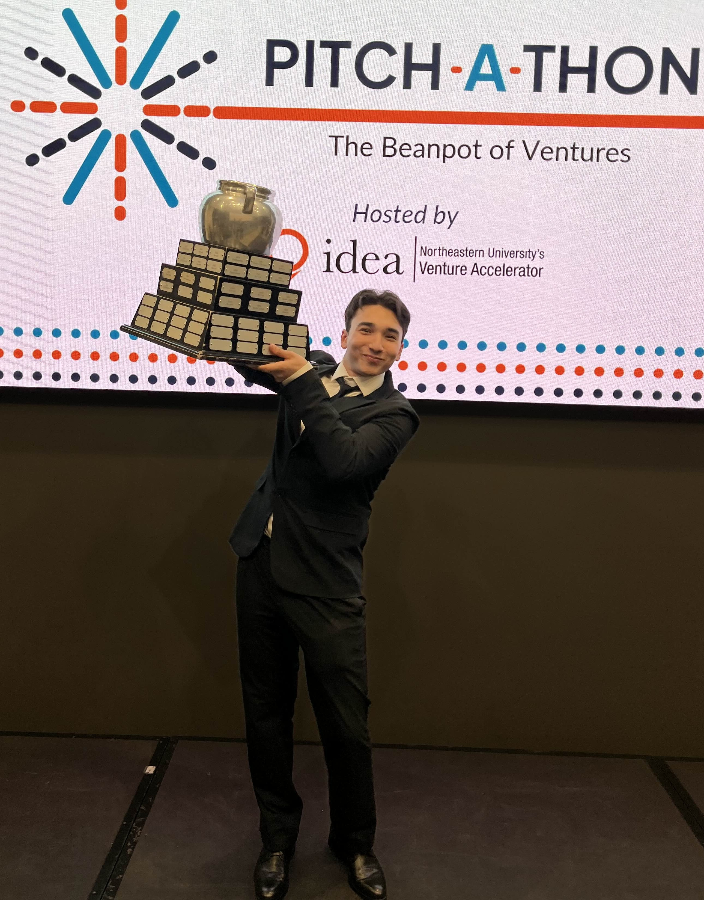

Experience

Work & Research
GPU Infrastructure Engineer
OsmosisAI (YC W25)Developing custom Triton kernels for fused linear cross entropy, optimizing rollout throughput for large-scale LLM post-training pipelines
▸
- Engineering GPU parallelism infrastructure for efficient distributed training and inference across multi-node clusters
Chief Operating Officer
IDEA Venture AcceleratorLeading a cross-functional team of 30+ students across Analytics, Venture, and Operations to manage accelerator programs and organizational infrastructure
▸
- Architecting and maintaining the organization's software ecosystem including website, mobile application, and event management platform
- Managing data systems tracking 2,800+ lifetime student ventures, including companies like Slate, Amino, and Mavrk that have collectively raised over $900M
- Led the end-to-end construction of IDEA's software pipeline from design through deployment
- Contributed to revamping the venture accelerator curriculum and operational strategy
ML & HPC Researcher
NUCAR Lab, Prof. David KaeliAuthored a custom SpMM CUDA kernel outperforming cuSPARSE across A100, H100, and H200 architectures, achieving 1.2x geometric mean speedup over 25 SuiteSparse matrix datasets from varying domains via shared memory tiling, coalesced access patterns, and warp-level load balancing for irregular sparsity
▸
- Profiled and optimized kernel performance using NVIDIA Nsight Compute and Nsight Systems, diagnosing memory-bound bottlenecks and tuning arithmetic intensity, occupancy, and L2 cache hit rates across GPU generations
- Published distributed RAG retrieval research at MIT IEEE URTC 2024, deploying the pipeline across thousands of PubMed papers in production for NIH, NIEHS, and PROTECT
- Benchmarked sparse matrix storage formats within GNN architectures characterizing bandwidth utilization and compute-bound vs memory-bound tradeoffs for GAT and transformer inference workloads
- SpMM kernel outperforming cuSPARSE, aSPT and other SOTA across A100, H100, and H200
- RAG system deployed in production for NIH, NIEHS, and PROTECT
- Published at MIT IEEE URTC 2024, ISPASS IEEE 2026
Software Engineering Mentee
Dell TechnologiesLeveraged Dell APEX Private Cloud to optimize virtualized environment deployments, achieving 15% faster provisioning times and improved infrastructure scalability
▸
- Built custom API integrations and Python automation scripts for cloud resource management, driving a 10% increase in operational efficiency across the platform
- Contributed to the automation of Dell's cloud platform data pipeline, reducing manual intervention in resource allocation
Cloud Infrastructure Intern
AmazonOptimized data flow across a distributed system managing thousands of database endpoints, reducing connection latency by 15% through targeted AWS Direct Connect configuration and vector database integration
▸
- Designed and implemented secure, scalable API endpoints backed by optimized database architecture, enabling 10% faster query execution across cloud-native applications
- Built a real-time data synchronization pipeline using AWS Amplify and vector databases, improving cross-platform data retrieval times and enabling seamless multi-region data access
- Automated monitoring and alerting infrastructure for distributed database systems
- Developed container orchestration workflows that streamlined deployment pipelines and reduced manual provisioning overhead
Education
Bachelor of Science in Computer Science & Physics
Northeastern UniversityHonors: Dean's List
- Putnam Club
- IDEA, Director of Analytics 2024/2025, Chief Operating Officer 2025/2026
- ASU Spring Cohort 2025
- rev.school